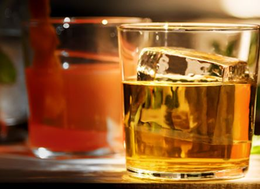
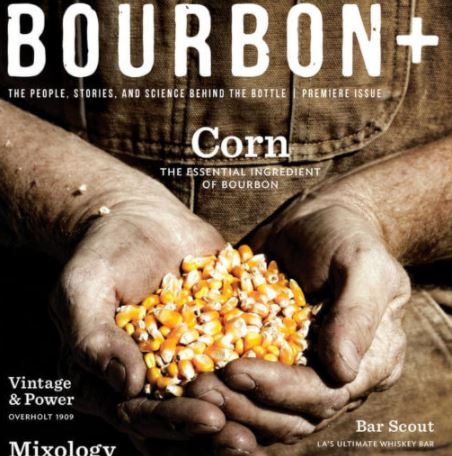
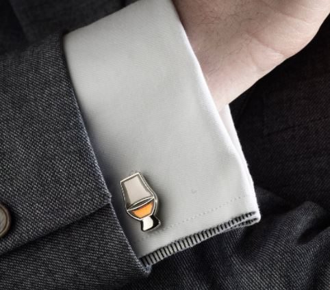
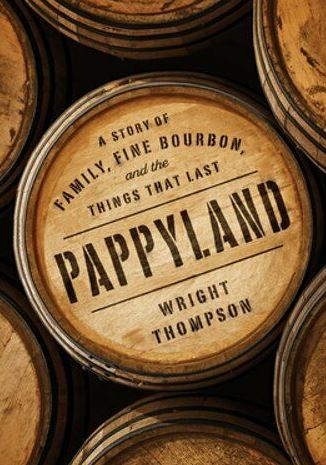
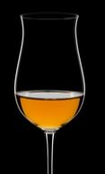

Holiday Whiskey Gift Giving Guide 2020
As today is often an outsized celebration of capitalism, I figured I would indulge in the fun and provide y'all with my annual Whiskey Gift Giving Guide. There are a lot of magazines, websites, and blogs that will recommend you buy whiskey stones or other worthless trinkets. I try to frame this list every year as a practical list of gifts that my fellow enthusiasts would actually want and use throughout the year. Additionally, I try to recommend some realistic gifts that will have a wow factor for the recipient.
Something for the Bourbon-loving Foodie Bourbon can lead you into a lot of things. Most of the time, it's hangover. But sometimes, it can lead you to a whole new world. For me, that was the wonderful world of country ham. Benton's may be the gold standard in country ham. The foodie in your life will love a pack of Benton's bacon or a whole ham leg. If you would rather give them a little more direction, check out Morgan Murphy's Bacon & Bourbon.
For the Bourbon Lover with everything Ice Made Clear. I love clear ice. Nothing elevates a cocktail or a bar like a block of solid, transparent ice. A ton of devices promise clear ice, but they can be clunky or flat out ineffective. Ice Made Clear has been my favorite ice making system and it produces crystal clear ice every time. It takes up little space in the freezer too. I love mine.
Something for the Bourbon Newbie You can always give a budding bourbon enthusiast a bottle of something good, or maybe a unique store pick. But if they are really turning the corner from Bourbon Curious to Bourbon Obsessed, a subscription to Bourbon Plus magazine is a great gift. Each issue features beautiful photography and very thoughtful journalism on our beloved hobby. Learning about the stories and the people behind it all will truly elevate their knowledge base and further hook them.
For the Whiskey-loving in law A whiskey loving in law definitely wants whiskey as a gift, but sitting around on Christmas morning with the kiddos may make unwrapping a bottle a little...taboo. That's where these Glencarin Cufflinks come in. A little classier than a fifth of Turkey under the tree, and just the right amount of fun for the in law who loves to imbibe with you.
Something for the Bourbon-loving Bookworm Pappyland by Wright Thompson. You will probably recognize Wright Thompson from ESPN's College Game Day. He's often the guy going off on tangents about football, the culture of the SEC, and things along those lines. Aside from Saturday's in the fall, Thompson is actually a pretty accomplished writer and his latest work is right up our alley. Thompson tells the story of Julian Van Winkle and his quest to make fine whiskey like his beloved Pappy did, but so much more. As he often does at ESPN, Thompson weaves the lore and romance of the past into the modern era and how we can move into the future while leaving some of it behind. I was gifted this book already and can not wait to crack it.
Something for Yourself It's hard to drop enough subtle hints to your loved ones for what you truly want, so I always advocate buying a little something for yourself. I'll finally admit it: the famous DBC Scepter is a Reidel Veritas Spirits glass. You'll be on your own to engrave it, but now you finally know where to buy this long stemmed, totally pretentious whiskey sipping glass. After all the questions I got about this glass, I hope you all go out and get one for yourself. Short stems are for peasants these days. It's time to enjoy whiskey way up top.